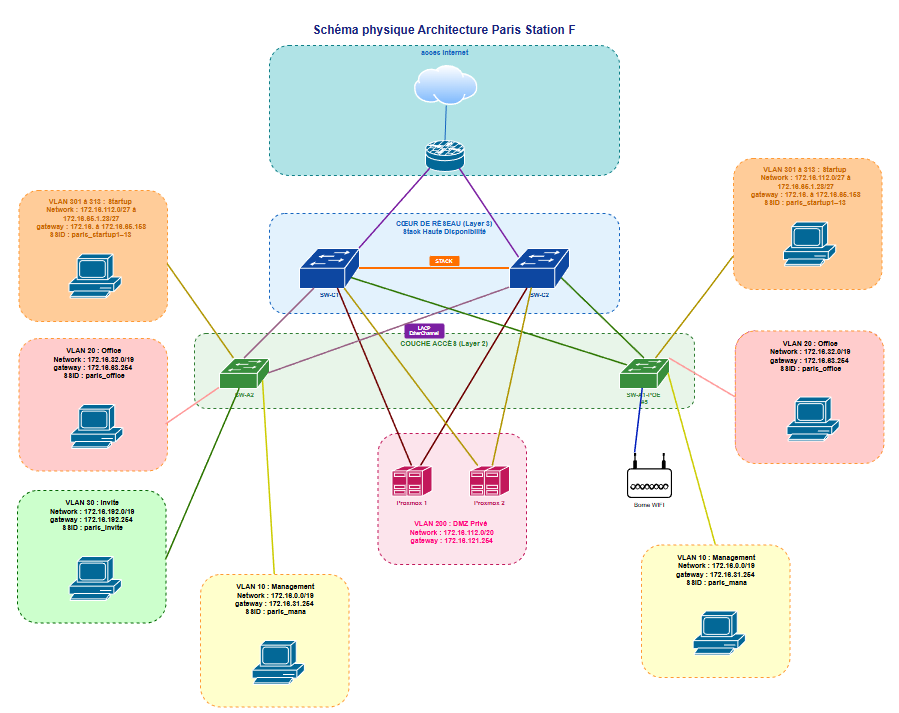
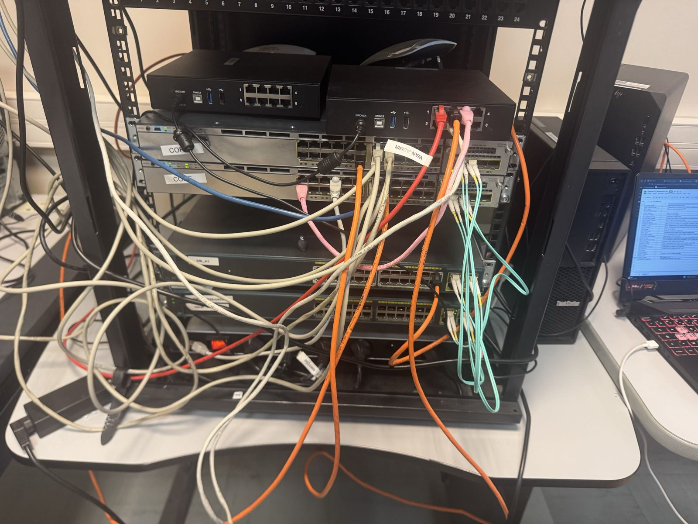

Épreuve professionnelle · BTS SIO SISR
Segmentation réseau par VLAN, routage inter-VLAN et ACL
Réalisation menée dans le cadre de l'administration de l'infrastructure réseau de Paris Station F, sur des équipements Cisco réels, présentée pour l'épreuve professionnelle du BTS SIO option SISR.
Télécharger la fiche descriptive de réalisation professionnelle
Présentation du projet
Cette réalisation a été menée dans le cadre de l'administration de l'infrastructure réseau de Paris Station F. L'objectif était de segmenter le réseau afin d'isoler les différents utilisateurs et services, tout en autorisant les communications nécessaires entre les VLAN.
La solution repose sur des équipements Cisco, avec un switch cœur de réseau de niveau 3, des switches d'accès et une borne Wi-Fi. L'administration des équipements a été réalisée à distance depuis un poste client avec MobaXterm en SSH.

Objectifs techniques
- Créer plusieurs VLAN correspondant aux usages de l'infrastructure.
- Affecter les ports utilisateurs aux VLAN appropriés.
- Transporter les VLAN entre les switches grâce aux liaisons trunk.
- Mettre en place le routage inter-VLAN sur le switch cœur.
- Relayer les requêtes DHCP grâce aux interfaces virtuelles de niveau 3.
- Empêcher la communication directe entre les réseaux des startups au moyen d'une ACL.
Architecture retenue
Le réseau est organisé autour d'un cœur de réseau redondé et d'une couche d'accès. Les switches d'accès distribuent les connexions des utilisateurs, des serveurs et de la borne Wi-Fi. Les liaisons entre les équipements sont configurées en trunk afin de transporter les VLAN nécessaires.
Le switch cœur assure le routage inter-VLAN au moyen d'interfaces virtuelles de commutation, appelées SVI. Chaque SVI constitue la passerelle du réseau IP associé à son VLAN.
Plan d'adressage
| VLAN | Usage | Réseau | Passerelle / SVI |
|---|---|---|---|
| 100 | DMZ public | 172.16.96.0/20 | 172.16.111.254 |
| 200 | DMZ privé | 172.16.112.0/20 | 172.16.127.254 |
| 10 | Management | 172.16.0.0/19 | 172.16.31.254 |
| 30 | Invités | 172.16.192.0/19 | 172.16.192.254 |
| 20 | Office | 172.16.32.0/19 | 172.16.63.254 |
| 920 | EXIT | 172.16.254.0/28 | 172.16.254.14 |
| 301 à 313 | Startups 1 à 13 | 172.16.64.0/27 à 172.16.65.128/27 | Voir détail ci-dessous |
Détail des VLAN startups
| VLAN | Réseau | SVI |
|---|---|---|
| 301 | 172.16.64.0/27 | 172.16.64.30 |
| 302 | 172.16.64.32/27 | 172.16.64.62 |
| 303 | 172.16.64.64/27 | 172.16.64.94 |
| 304 | 172.16.64.96/27 | 172.16.64.126 |
| 305 | 172.16.64.128/27 | 172.16.64.158 |
| 306 | 172.16.64.160/27 | 172.16.64.190 |
| 307 | 172.16.64.192/27 | 172.16.64.222 |
| 308 | 172.16.64.224/27 | 172.16.64.254 |
| 309 | 172.16.65.0/27 | 172.16.65.30 |
| 310 | 172.16.65.32/27 | 172.16.65.62 |
| 311 | 172.16.65.64/27 | 172.16.65.94 |
| 312 | 172.16.65.96/27 | 172.16.65.126 |
| 313 | 172.16.65.128/27 | 172.16.65.158 |
Configurations principales
Interfaces SVI et relais DHCP
Les interfaces VLAN du switch cœur servent de passerelles aux réseaux utilisateurs. Les relais DHCP redirigent les demandes vers les serveurs DHCP configurés dans l'infrastructure.
interface Vlan10
ip address 172.16.31.254 255.255.224.0
ip helper-address 172.16.127.253
ip helper-address 172.16.31.252
interface Vlan20
ip address 172.16.63.254 255.255.224.0
ip helper-address 172.16.127.253
ip helper-address 172.16.31.252ACL de séparation des startups
L'ACL suivante bloque les communications entre les réseaux des startups, tout en autorisant les autres flux IP. Elle est appliquée en entrée sur l'interface du VLAN 307.
ip access-list extended BLOCK-STARTUPS
deny ip 172.16.64.0 0.0.1.255 172.16.64.0 0.0.1.255
permit ip any any
interface Vlan307
ip access-group BLOCK-STARTUPS inMéthode de mise en œuvre
- Création des VLAN et mise en place du VTP.
- Configuration des ports utilisateurs en mode access.
- Configuration des liaisons inter-switches et de la borne Wi-Fi en mode trunk.
- Création des interfaces SVI sur le switch cœur.
- Activation du routage inter-VLAN.
- Mise en place de l'ACL destinée à isoler les réseaux startups.
- Vérification de la connectivité et de la table de routage.
Validation
Les tests ont confirmé le fonctionnement du routage inter-VLAN : un ping depuis un client du VLAN 10 vers le SVI du VLAN 20 a été réalisé avec succès.
ping 172.16.63.254Le filtrage des startups a également été vérifié. Le ping depuis la startup Cycle, située dans le VLAN 307 avec l'adresse 172.16.64.64, vers une autre startup a échoué, conformément à la règle de l'ACL.
ping 172.16.64.64
Délai d'attente de la demande dépassé.La table de routage du switch cœur affichait les réseaux VLAN comme directement connectés aux interfaces VLAN correspondantes, ce qui confirme l'activation du routage inter-VLAN.
Environnement technique
| Équipements | Switches Cisco, switch cœur de niveau 3, borne Wi-Fi |
| Accès d'administration | SSH depuis MobaXterm |
| Segmentation | VLAN et VTP |
| Routage | Routage inter-VLAN via SVI |
| Attribution réseau | Relais DHCP avec ip helper-address |
| Sécurité réseau | ACL étendue Cisco IOS |
| Vérification | Ping et consultation de la table de routage |
Compétences mobilisées
- Conception d'une solution d'infrastructure réseau.
- Déploiement et configuration d'équipements Cisco.
- Segmentation logique avec les VLAN.
- Configuration des modes access et trunk.
- Routage inter-VLAN avec des interfaces SVI.
- Mise en œuvre d'un relais DHCP.
- Filtrage des flux avec une ACL étendue.
- Validation d'une infrastructure réseau par des tests de connectivité.
Conclusion
La segmentation mise en place permet d'isoler les différents usages du réseau tout en conservant les communications nécessaires. Le switch cœur prend en charge le routage entre les VLAN, les trunks assurent le transport des réseaux sur l'infrastructure et l'ACL limite les communications entre startups. Les tests réalisés valident le fonctionnement attendu de la solution.